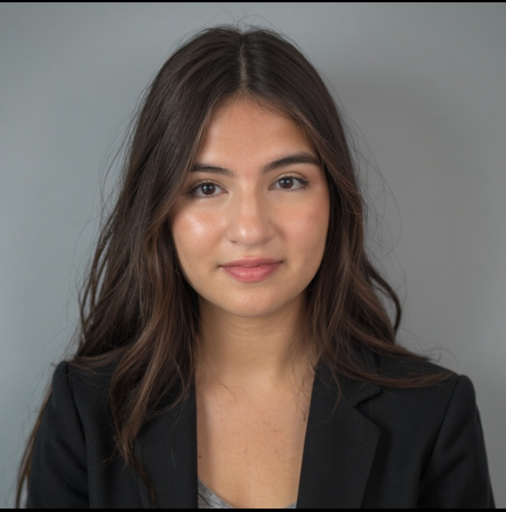

Sofia Benavides
Junior, University of South Florida. I see my future in investment banking, working on deals that not only challenge me analytically but also allow me to make a real impact on businesses and people. With my double major in Finance and Business Analytics & Information Systems, I want to bring both technical skills and a human perspective to the work I do. My goal is to grow into a professional who clients can trust to guide them through complex decisions, while continuing to learn, collaborate, and push myself to new levels in this industry.
Education
- BS, Business Analytics & Information Systems - University of South Florida, Tampa
- BS, Finance (Corporate Finance Concentration) - University of South Florida, Tampa
- Minor, Political Science - University of South Florida, Tampa
Skills
- Data Analysis: Excel, Tableau, Power BI
- Soft Skills: Communication, Teamwork, Problem-Solving
- Languages: Spanish (Fluent), English (Fluent)